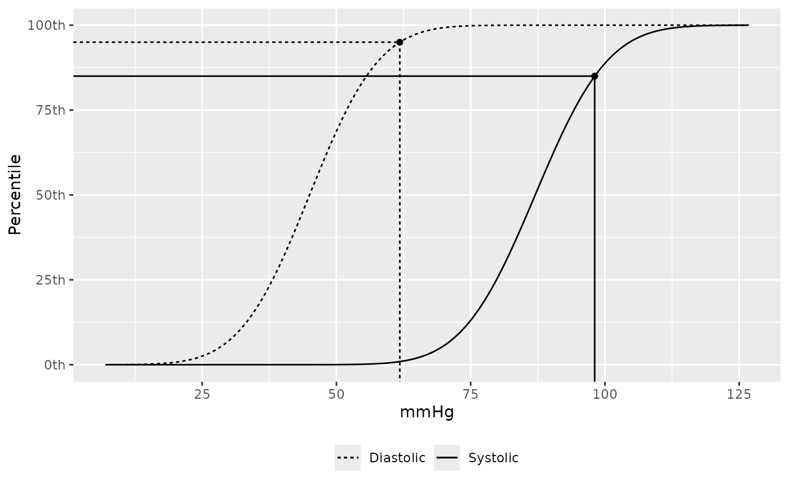
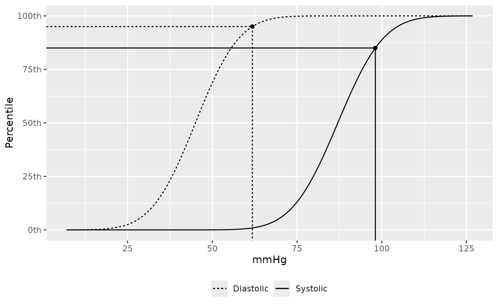

Plot the CDF for blood pressure given age, sex, and height.
Usage
bp_cdf(...)
# S3 method for pedbp_bp
bp_cdf(x, ...)
# S3 method for pedbp_p_bp
bp_cdf(x, ...)
# S3 method for pedbp_q_bp
bp_cdf(x, ...)
# S3 method for default
bp_cdf(
age,
male,
height = NA,
height_percentile = 0.5,
source = getOption("pedbp_bp_source", "martin2022"),
sbp = NA,
dbp = NA,
...
)Arguments
- ...
not currently used
- x
- age
numeric age, in months
- male
integer value, 1 = male, 0 = female
- height
numeric, in centimeters, can be missing. See Details.
- height_percentile
height percentile to use. See Details.
- source
the method, or data set, to use as the reference. See Details.
- sbp
the observed systolic blood pressure
- dbp
the observed diastolic blood pressure
Value
When passing in a pedbp_bp object, the return is a list of
ggplot objects. The length of the list is equal to the length of the
number of quantiles or percentiles within the pedbp_bp object.
When using the default method the return is just
a ggplot object showing the CDF for diastolic and systolic
blood pressures with vertical and horizontal lines highlight the percentile
for the given inputs.
Examples
# Explicity defining the inputs
bp_cdf(age = 96, male = 1, sbp = 103, dbp = 55)
 # Plotting two cdfs from a call to p_bp
x <- p_bp(q_sbp = rep(100, 2),
q_dbp = rep( 60, 2),
age = rep(35.75, 2),
male = c(0, 0),
height = c(NA, 100))
bp_cdf(x)
#> [[1]]
# Plotting two cdfs from a call to p_bp
x <- p_bp(q_sbp = rep(100, 2),
q_dbp = rep( 60, 2),
age = rep(35.75, 2),
male = c(0, 0),
height = c(NA, 100))
bp_cdf(x)
#> [[1]]
 #>
#> [[2]]
#>
#> [[2]]
 #>
# Plotting a cdf from a call to q_bp
x <- q_bp(p_sbp = 0.85, p_dbp = 0.95,
age = 29.2, male = 0, height_percentile = 0.95,
source = "flynn2017")
bp_cdf(x)
#> [[1]]

#>
#>
# Plotting a cdf from a call to q_bp
x <- q_bp(p_sbp = 0.85, p_dbp = 0.95,
age = 29.2, male = 0, height_percentile = 0.95,
source = "flynn2017")
bp_cdf(x)
#> [[1]]

#>